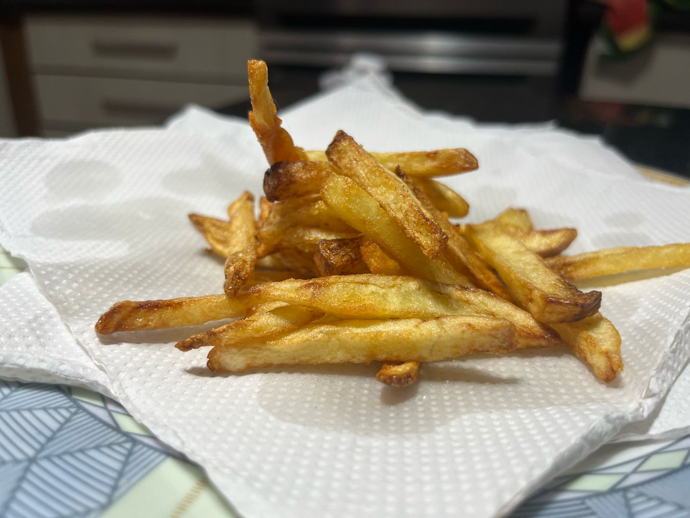

Bem-vindo ao Curso
Aprenda passo a passo como preparar a batata frita perfeita!
Ingredientes
- Batatas
- Água
- Óleo
- Sal
Video Tutorial
Modo de Preparo
- Descascar as batatas.
- Cortar as batatas.
- Deixar as batatas na água gelada por 5 a 10 minutos.
- Secar as batatas.
- Deixar o óleo esquentar por 5 minutos a 180 graus.
- Fritar as batatas.
- Retirar as batatas e polvilhar sal.